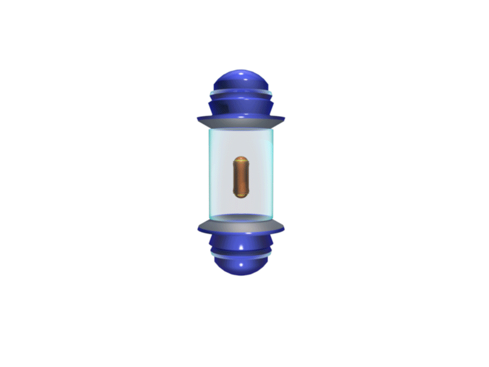

Quand le terrain lui-même devient votre adversaire
Dans ASTÉROÏD destroyer, survivre ne consiste pas uniquement à éviter les ennemis. Le système de combat peut également générer des perturbations capables de modifier brutalement les conditions de la mission.
Plateforme réduite, environnement inversé, barrières énergétiques ou obstacles imprévus : plusieurs malus peuvent venir perturber vos automatismes et vous obliger à adapter votre façon de jouer en quelques secondes.
À ces perturbations s'ajoutent différents pièges et éléments du décor susceptibles de détourner votre attention ou de vous éloigner de votre objectif. Le danger ne vient donc pas toujours directement de ce qui vous attaque.

Des malus capables de modifier les règles du combat
Les malus ont pour fonction de casser les automatismes du joueur et de transformer temporairement les conditions dans lesquelles une mission doit être menée.
Une plateforme qui rétrécit réduit brutalement votre marge de manœuvre. Chaque déplacement devient alors plus précis et la moindre erreur peut entraîner une perte de contrôle ou une collision.
D'autres perturbations peuvent aller encore plus loin en modifiant la perception du terrain. Lorsque le monde s'inverse, les repères habituels disparaissent et le joueur doit rapidement recalibrer ses mouvements.
La mission peut changer en quelques secondes
Les malus ne sont pas de simples pénalités. Ils sont intégrés au gameplay pour obliger le joueur à modifier immédiatement son approche et à composer avec de nouvelles contraintes.
Une plateforme qui perd progressivement de sa taille transforme l'espace disponible. Un monde inversé perturbe les repères de déplacement. Une barrière énergétique peut au contraire créer une zone de protection temporaire tout en devenant un piège si elle est mal exploitée.
La difficulté vient donc autant de l'effet du malus que de la capacité du joueur à comprendre ce qui vient de changer. Identifier rapidement une nouvelle contrainte peut faire la différence entre une récupération réussie et une perte de contrôle.
Tout ce qui vous entoure peut perturber votre trajectoire
Les malus ne sont qu'une partie des menaces présentes pendant une mission. Des pièges et des éléments environnementaux peuvent également être disposés sur le parcours afin de détourner le joueur de son objectif.
Certains obstacles peuvent interrompre une trajectoire parfaitement maîtrisée. D'autres peuvent forcer le joueur à modifier son positionnement, à ralentir ou à prendre une décision différente de celle prévue quelques secondes auparavant.
Ces éléments sont conçus pour maintenir une pression constante sur le joueur. L'objectif n'est plus seulement de survivre aux menaces visibles, mais également d'anticiper ce que le terrain peut réserver.
Une menace qui peut aussi devenir votre dernière chance
Certaines perturbations présentent une particularité : leur effet dépend directement de la manière dont le joueur les exploite.
La barrière énergétique en est un exemple. Elle peut constituer une protection précieuse lorsque la situation devient critique, mais elle peut également enfermer le joueur dans une configuration défavorable ou compliquer une trajectoire déjà difficile.
Comprendre le fonctionnement de ces éléments permet alors de retourner une contrainte contre le système lui-même. Une menace correctement anticipée peut devenir une opportunité de survie.
Les malus ne ralentissent pas seulement votre progression.
Ils modifient les conditions du combat, perturbent vos repères et peuvent transformer une situation maîtrisée en séquence de survie.
Restez mobile, observez les changements du terrain et adaptez votre stratégie. Dans ASTÉROÏD destroyer, chaque perturbation doit être comprise avant de pouvoir être maîtrisée.